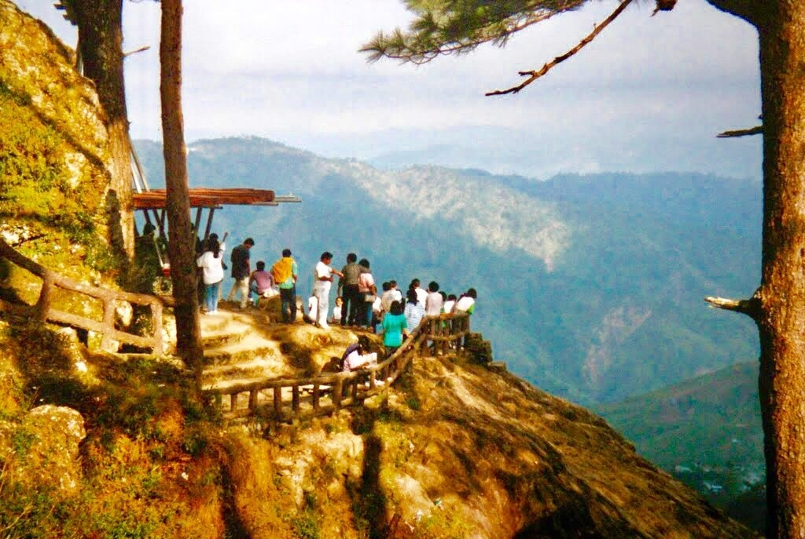
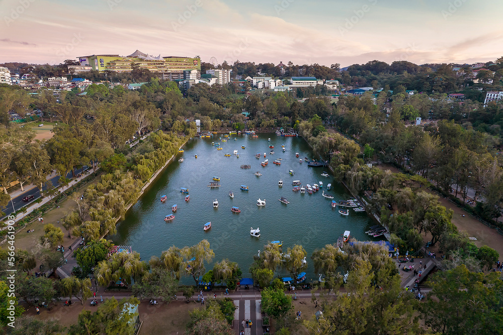
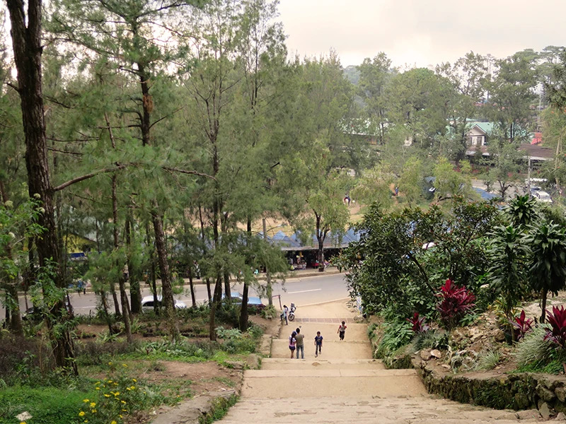
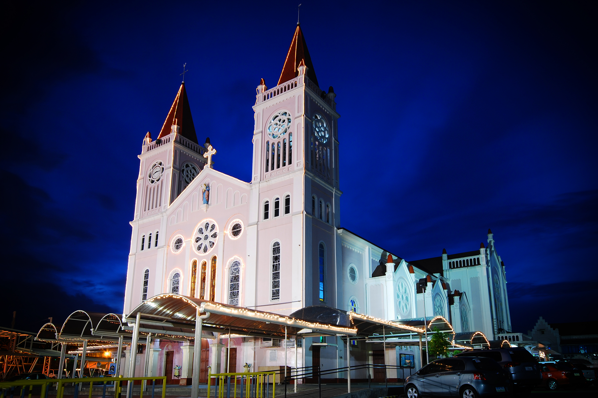
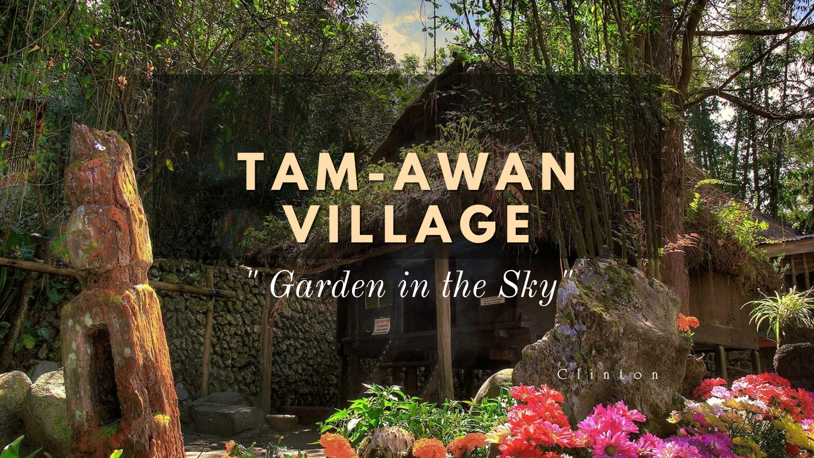
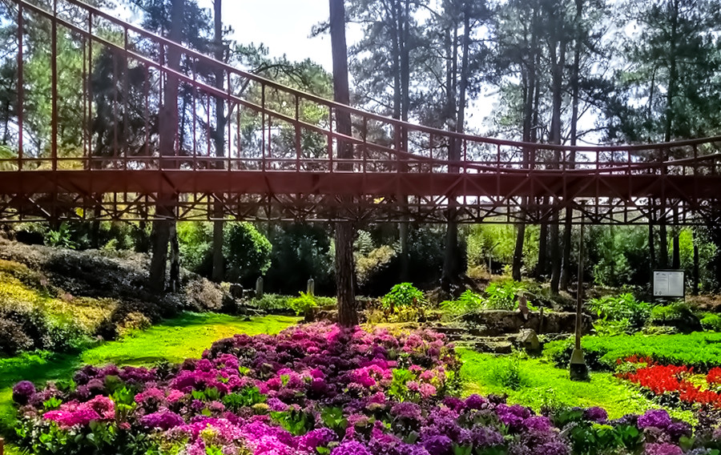
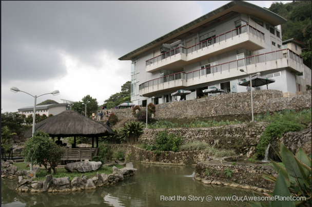
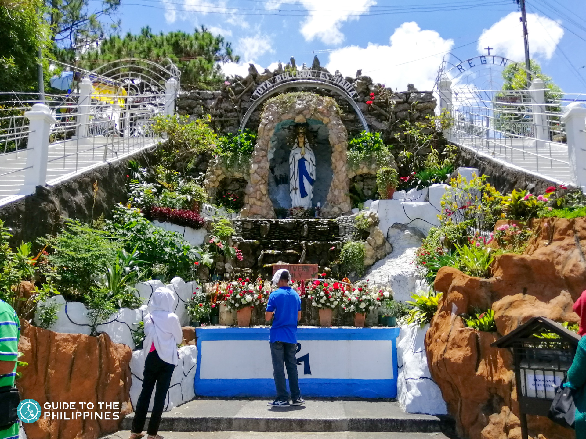

Mines View Park

Situated on a promontory overlooking the breathtaking Cordillera mountain range, Mines View Park offers visitors a sweeping vista of the surrounding landscape. Named for its commanding view of the gold and copper mines of Benguet province, this park is not only a feast for the eyes but also a cultural experience. Visitors can interact with members of the indigenous Igorot community who wear traditional attire and showcase their crafts, including handwoven textiles and woodcarvings. Additionally, there are stalls where visitors can purchase souvenirs such as locally made jewelry, handicrafts, and intricately woven baskets. Mines View Park is not just a scenic overlook but a cultural immersion into the vibrant traditions of the Cordillera region.
Burnham Park

Spanning 32 hectares in the heart of Baguio City, Burnham Park is a verdant oasis of natural beauty and recreational activities. Named after Daniel Hudson Burnham, the American architect and urban planner who envisioned the layout of Baguio, this park is a beloved destination for both locals and tourists alike. Its centerpiece is a picturesque man-made lake where visitors can rent colorful swan boats or rowboats for a leisurely paddle on the tranquil waters. Surrounding the lake are lush gardens, walking paths, and playgrounds where families can relax and unwind. Burnham Park also hosts various events and festivals throughout the year, including the colorful Panagbenga Flower Festival, making it a vibrant hub of activity and celebration.
The Mansion
A stately and historic landmark nestled amidst manicured gardens, The Mansion serves as the official summer residence of the President of the Philippines when visiting Baguio. Built in the early 1900s, this elegant mansion showcases a distinct blend of American colonial and English Tudor architectural styles. Its iconic white façade and intricate detailing make it a must-visit destination for architecture enthusiasts and history buffs alike. While visitors cannot enter the mansion itself, they can marvel at its grandeur from the outside and stroll through the beautifully landscaped gardens adorned with vibrant flowers and towering pine trees. The Mansion is not only a symbol of presidential prestige but also a testament to the enduring charm and elegance of Baguio's colonial heritage.
Wright Park

Tucked away amidst a serene forest of pine trees, Wright Park is a tranquil retreat renowned for its scenic beauty and equestrian attractions. Named after Luke E. Wright, the American Governor-General who initiated the development of Baguio as a hill station, this park offers visitors a chance to immerse themselves in the natural splendor of the Cordillera mountains. One of the park's main highlights is its horseback riding trails, where visitors can embark on a leisurely ride through the lush landscape accompanied by skilled guides. For those seeking relaxation, the park also features spacious lawns and picnic areas where families can enjoy a leisurely day amidst nature's embrace. Wright Park's serene ambiance and picturesque surroundings make it a perfect escape from the hustle and bustle of city life.
Baguio Cathedral (Our Lady of the Atonement Cathedral)

Perched majestically atop a hill overlooking Session Road, the Baguio Cathedral, also known as Our Lady of the Atonement Cathedral, is a striking architectural marvel that stands as a beacon of faith and spirituality in Baguio City. Constructed in the neo-Gothic style, this magnificent cathedral boasts soaring spires, intricate stained glass windows, and ornate archways that inspire awe and reverence in all who behold it. Inside, the cathedral's lofty nave is adorned with religious icons and exquisite altar pieces, creating a serene sanctuary for prayer and contemplation. Surrounding the cathedral are meticulously landscaped gardens and prayer nooks where visitors can seek solace and tranquility amidst the hustle and bustle of the city below. Whether attending mass or simply marveling at its architectural beauty, a visit to Baguio Cathedral is sure to leave a lasting impression on visitors.
Session Road

As the bustling heart of Baguio City, Session Road is a vibrant thoroughfare that pulsates with energy, commerce, and culture. Named after the Philippine Commission's "session" during the American colonial period, this iconic street is a melting pot of sights, sounds, and flavors that capture the essence of Baguio's unique charm. Lined with a diverse array of shops, restaurants, and entertainment venues, Session Road offers something for everyone, whether you're in the mood for shopping, dining, or simply soaking in the city's lively ambiance. From trendy boutiques and artisanal cafes to street vendors selling local delicacies and handicrafts, the street is a treasure trove of delights waiting to be discovered. Whether it's savoring a cup of freshly brewed Benguet coffee or sampling traditional Cordilleran cuisine, a stroll along Session Road promises an unforgettable adventure filled with surprises and delights.
Tam-Awan Village

Nestled amidst the verdant hills of Baguio, Tam-Awan Village is a cultural sanctuary that celebrates the rich heritage and traditions of the indigenous peoples of the Cordillera region. Meaning "vantage point" in the local dialect, Tam-Awan offers visitors a unique opportunity to immerse themselves in the vibrant tapestry of Cordilleran culture through art, architecture, and community engagement. Modeled after a traditional Ifugao village, the village features a collection of authentic huts constructed from indigenous materials such as bamboo, wood, and thatch, providing visitors with an authentic glimpse into the daily lives of the region's inhabitants. Within the village, visitors can explore art galleries showcasing works by local artists, participate in workshops on traditional crafts such as weaving and woodcarving, and attend cultural performances that showcase the rich diversity of Cordilleran music, dance, and folklore. Surrounded by lush forests and commanding views of the surrounding mountains, Tam-Awan Village is not just a tourist destination but a living testament to the resilience, creativity, and cultural heritage of the Cordillera people.
Botanical Garden

Enveloped in a lush canopy of towering pine trees, the Baguio Botanical Garden is a verdant oasis that showcases the rich biodiversity of the Cordillera region. Home to a diverse collection of plant species, including endemic orchids, ferns, and mosses, this botanical sanctuary offers visitors a tranquil respite from the hustle and bustle of urban life. As visitors meander along winding pathways, they'll encounter themed gardens that highlight the unique ecosystems of the Cordillera mountains, from mossy forests and fern groves to alpine meadows and rock gardens. One of the garden's main attractions is its replica of a traditional Igorot village, where visitors can explore intricately woven huts and learn about the indigenous peoples who have called the mountains home for centuries. Additionally, the garden hosts educational programs, workshops, and guided tours that provide insights into the region's rich botanical heritage and conservation efforts. Whether it's admiring rare orchids in bloom or simply reveling in the serenity of nature, a visit to the Baguio Botanical Garden is sure to inspire awe and appreciation for the wonders of the natural world.
BenCab Museum

Perched atop a scenic hillside overlooking the verdant mountains of Baguio, the BenCab Museum is a cultural gem that showcases the diverse artistic legacy of the Philippines. Founded by National Artist Benedicto Cabrera, also known as BenCab, this world-class museum is home to a vast collection of contemporary art, indigenous artifacts, and ethnographic treasures that span the breadth of Philippine history and culture. Housed within a sprawling complex of rustic-chic buildings inspired by traditional Cordillera architecture, the museum's galleries feature a diverse array of artworks, from BenCab's iconic paintings and sculptures to works by other Filipino artists spanning various genres and mediums. In addition to its impressive art collection, the museum also boasts lush gardens, tranquil ponds, and scenic viewpoints that offer breathtaking vistas of the surrounding landscape. Visitors can also enjoy a leisurely stroll through the museum's organic farm and garden, which showcases sustainable agriculture practices and promotes environmental conservation. Whether it's marveling at masterpieces or communing with nature, a visit to the BenCab Museum is a sensory journey that celebrates the beauty, creativity, and cultural heritage of the Philippines.
Lourdes Grotto

Nestled amidst verdant hills on the outskirts of Baguio City, the Lourdes Grotto is a serene pilgrimage site that offers visitors a place of quiet reflection and spiritual contemplation. Modeled after the famous grotto in Lourdes, France, this tranquil sanctuary features a series of 252 steps leading up to a replica of the Marian shrine, where pilgrims can offer prayers, light candles, and seek solace in the presence of Our Lady of Lourdes. Along the ascent, visitors will encounter stations of the cross and lush gardens adorned with statues depicting scenes from the life of Christ, providing a poignant backdrop for meditation and prayer. At the summit, breathtaking panoramic views of Baguio City and the surrounding mountains await, offering a sense of peace and perspective amidst the natural beauty of the Cordilleras. Whether it's seeking divine guidance or simply communing with nature, a visit to the Lourdes Grotto is a soul-nourishing experience that invites visitors to find solace and serenity amidst the beauty of God's creation.